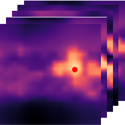
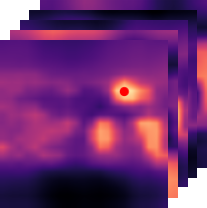
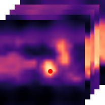
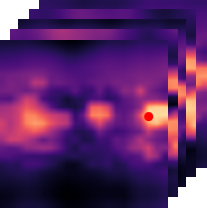
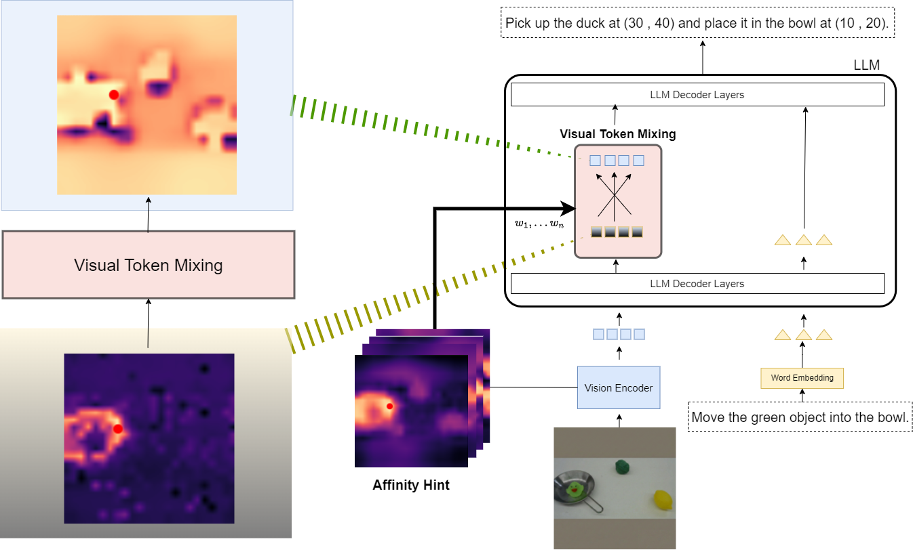

Cluttered Localization Task
<Pick up the yellow duck and drop it into a pan>

Cluttered Localization Task
<Pick up the yellow duck and drop it into a pan>

Relative Height Task
<Pick up the short object and place it on the pan>

Relative Height Task
<Pick up the long object and place it on the pan>

Color Match Task
<Pick up object same color as the duck and drop it into a pan>
Many Vision-Language-Action (VLA) models flatten image patches into a 1D token sequence, weakening the 2D spatial cues needed for precise manipulation. We introduce IVRA, a lightweight, training-free method that improves spatial understanding by exploiting affinity hints already available in the model's built-in vision encoder, without requiring any external encoder or retraining. IVRA selectively injects these affinity signals into a language-model layer in which instance-level features reside. This inference-time intervention realigns visual-token interactions and better preserves geometric structure while keeping all model parameters fixed. We demonstrate the generality of IVRA by applying it to diverse VLA architectures (LLaRA, OpenVLA, and FLOWER) across simulated benchmarks spanning both 2D and 3D manipulation (VIMA and LIBERO) and on various real-robot tasks. On 2D VIMA, IVRA improves average success by +4.2% over the baseline LLaRA in a low-data regime. On 3D LIBERO, it yields consistent gains over the OpenVLA and FLOWER baselines, including improvements when baseline accuracy is near saturation (96.3% to 97.1%).

@article{park2026ivra,
title={IVRA: Improving Visual-Token Relations for Robot Action Policy with Training-Free Hint-Based Guidance},
author={Park, Jongwoo and Ranasinghe, Kanchana and Jang, Jinhyeok and Mata, Cristina and Jang, Yoo Sung and Ryoo, Michael S},
journal={arXiv preprint arXiv:2601.16207},
year={2026}
}